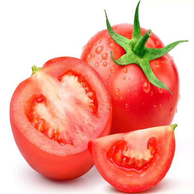

Tomatoes
Tomato, (Solanum lycopersicum), flowering plant of the nightshade family , cultivated extensively for its edible fruits. Labelled as a vegetable for nutritional purposes, tomatoes are a good source of vitamin C and the phytochemical lycopene. The fruits are commonly eaten raw in salads, served as a cooked vegetable, used as an ingredient of various prepared dishes, and pickled. Additionally, a large percentage of the world’s tomato crop is used for processing; products include canned tomatoes, tomato juice, ketchup, puree, paste, and “sun-dried” tomatoes or dehydrated pulp.
The plant requires relatively warm weather and much sunlight; it is grown chiefly in hothouses in cooler climates. Tomatoes are usually staked, tied, or caged to keep the stems and fruits off the ground, and consistent watering is necessary to avoid blossom-end rot and cracking of the fruits. The plants are susceptible to a number of pests and diseases, including bacterial wilt, early blight, mosaic virus, Fusarium wilt, nematodes, and tomato hornworms. Many of these problems can be controlled with crop rotation, the use of fungicides and pesticides, and the planting of resistant varieties. The tiny currant tomato (S. pimpinellifolium) is a closely related species and has been used by breeders to hybridize several pest- and disease-resistant tomato varieties.